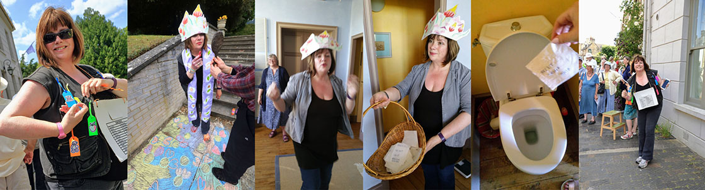
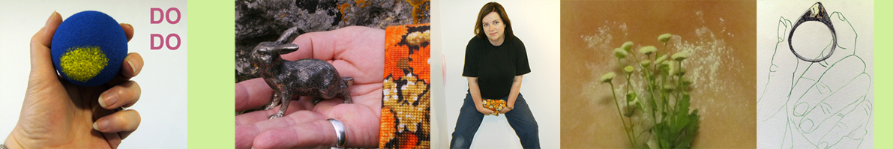

about

British artist Clare Carswell MA(RCA) works with performance and drawing to make works for the gallery or the public space. Her recent performance works are interactive and invite audience to share sounds or simple actions to invoke personal or shared cultural memories. In 2017 she will perform a new series of works in various locations in rural Oxfordshire, in Berlin and in Leiden Netherlands. Her performance art website is www.clarecarswellperformance.com
In June 2017 Clare curated FESTAL FAVOURS, a programme of performance and installation art for the Charlbury Festival in Oxfordshire. It presented a platform of new performance works by artists with links to the region such as Brian Catling and Holly Slingsby as well as audio visual installation and printmaking https://festalfavours.tumblr.com
Clare also curates the work of other artists at AYYO Contemporary Art a gallery and project space at her studio, Overlay Studio near Oxford. She runs a residency programme and selects UK and international artists for short residencies and to exhibit, screen or perform new work www.artpitch.org
In 2016 Clare launched an online arts review journal IRIS irisartinsights.tumblr.com
